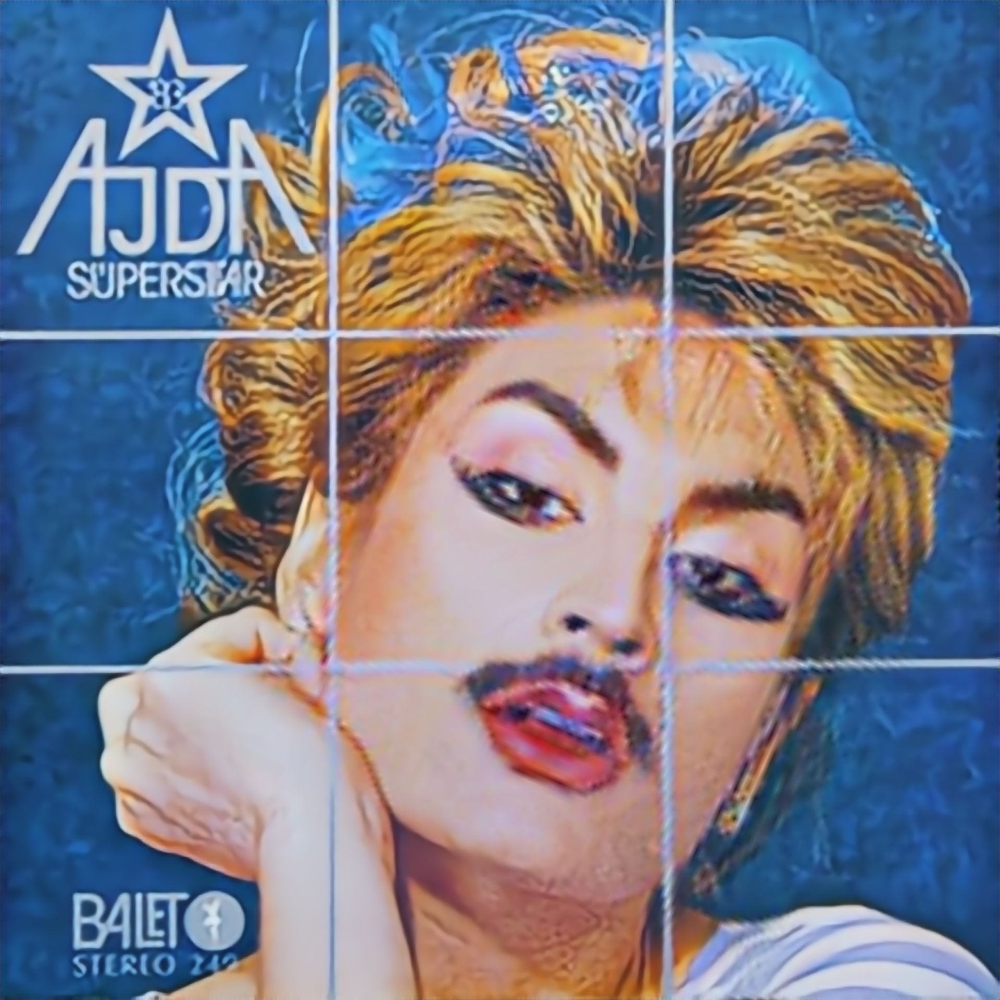

Orhun Mersin (Izmir, 1999) is a Berlin-based transdisciplinary researcher and drag artist working at the intersection of academia, exhibitions, nightlife, and theaters, often under the stage name kekik.
Trained as a contemporary dancer and holding a bachelor's degree in computer science, they have been part of the research platform New Practice in Art and Technology at TU–UdK Berlin, supported by a scholarship from Stiftung der Deutschen Wirtschaft. Their practice is rooted in dance, contortion, an engagement with AI technologies as performative material rather than neutral tools, and an exploration of "dragging" as a methodology: pulling fragments across contexts to break narratives, and open up queer futures. They often combine this with diasporic archive materials from Turkey's and Germany's 1980s–2000s. Lately, they have been a research fellow at the University of Freiburg.
Recent work has been presented at Maxim Gorki Theater (Berlin), Sophiensæle (Berlin), DOCK11 (Berlin), Schauspiel Dortmund, HEK Basel, Ars Electronica (Linz), b3 Biennale (Frankfurt), Kaynaş Club (Amsterdam), İÇ İÇE (Berlin), and re:festival (Nürnberg).
